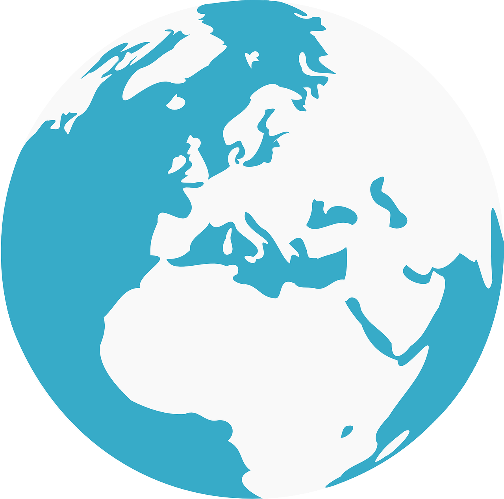

What is Climate Change?
Climate change describes a change in the typical weather for a region such as high and low temperatures and amount of rainfall over a long period of time. Scientists have observed that, overall, Earth is warming. In fact, many of the warmest years on record have happened in the past 20 years. This rise in global temperature is sometimes called global warming.Climate change is an urgent global issue that affects every aspect of life on Earth. It refers to the long-term shifts in temperatures and weather patterns, largely driven by human activities such as burning fossil fuels, deforestation, and industrial emissions. These actions increase the concentration of greenhouse gases, trapping heat in the atmosphere and leading to rising global temperatures.

How Do We Know Climate is Changing?
Scientists have been observing Earth for a long time. They use NASA satellites and other instruments to collect many types of information about Earth's land, atmosphere, ocean and ice. This information tells us that Earth's climate is getting warmer.These tools collect data on temperature changes, atmospheric composition, ocean conditions, and ice coverage. The evidence is clear—Earth is getting warmer.Some key indicators of climate change include Rising Global Temperatures: Many of the warmest years on record have occurred in the past 20 years, Melting Ice: Glaciers and ice sheets are shrinking, leading to rising sea levels, Extreme Weather: Increased frequency of heatwaves, storms, and unpredictable weather patterns, Ocean Changes: Higher temperatures and acidification are affecting marine life and Impact on Ecosystems: Shifts in plant and animal populations due to changing conditions.
Climate change in UAE
The continuing temperature rise caused by global warming contributes to UAE's water scarcity, drought, rising sea level, and aridity. The countryside of the UAE, characterized with its great arid land, infrequent precipitation, and high temperatures are already facing long-term aridity.The continuing temperature rise caused by global warming contributes to UAE's water scarcity, drought, rising sea level, and aridity. The UAE has a hot desert climate, which is very vulnerable to the effects of climate change and contributes to worsening water scarcity, quality, and water contamination.The majority of the rainfall occurs during the winter months.The UAE is situated in a region extremely vulnerable to the impacts of climate change, such as warmer weather, less precipitation, droughts, higher sea levels and increased frequency of dust and sand storms.
Hover over the globe to see how different regions are affected.
